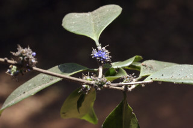
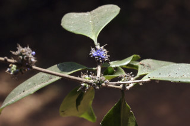
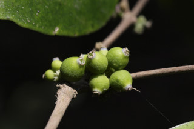
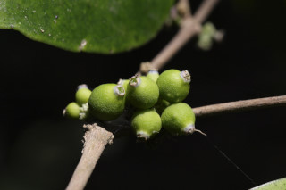

Trees ca. 8 m tall.
ಅಂದಾಜು 8 ಮೀ. ಎತ್ತರದವರೆಗೆ ಮರಗಳು.
ഏതാണ്ട് 8 മീറ്റര് ഉയരമുളള മരങ്ങള്.
மரங்கள் 8 மீ. உயரம் வரை வளரக்கூடியது
Bark grey, finely minutely fissured.
ತೊಗಟೆ ಬೂದು ಬಣ್ಣದಲ್ಲಿದ್ದುನಯವಾದ ಮತ್ತು ಸೂಕ್ಷ್ಮವಾದ ಸೀಳಿಕೆಗಳನ್ನು ಹೊಂದಿರುತ್ತದೆ.
നന്നായി, സൂക്ഷ്മമായി വിണ്ടുകീറിയ, നരച്ച നിറത്തിലുളള പുറംതൊലി.
மரத்தின் பட்டை சாம்பல் நிறமானது, நுண்ணிய பிளவுகளுடையது.
Branchlets subterete, glabrous.
ಕಿರುಕೊಂಬೆಗಳು ಉಪ-ದುಂಡಾಕಾರದಲ್ಲಿದ್ದು ರೋಮರಹಿತವಾಗಿರುತ್ತವೆ.
അരോമിലമായ, ഉപഗോളാകാര, ഉപശാഖകള്.
சிறிய நுனிக்கிளைகள் குறுக்குவெட்டுத் தோற்றத்தில் வளையம் போன்றது, உரோமங்களற்றது.
Leaves simple, opposite, decussate; petiole 0.5-1 cm long, planoconvex in cross section, glabrous; lamina 5-10 x 1.8-5 cm, elliptic, elliptic-lanceolate, apex narrowly acuminate, base acute to attenuate, margin entire, thinly coriaceous, drying olive green or yellowish and rugose; midrib slightly canaliculate above; secondary_nerves obscure; tertiary_nerves obscure.
ಎಲೆಗಳು ಸರಳವಾಗಿದ್ದು, ಕತ್ತರಿಯಾಕಾರದ ಅಭಿಮುಖ ಜೋಡನಾ ವ್ಯವಸ್ಥೆಯ –ಲ್ಲಿರುತ್ತವೆ; ತೊಟ್ಟುಗಳು 0.5-1 ಸೆಂ.ಮೀ. ಉದ್ದವಿದ್ದು ರೋಮರಹಿತವಾಗಿರುತ್ತವೆ ಹಾಗೂ ಅಡ್ಡ ಸೀಳಿದಾಗ ಸಪಾಟ ಪೀನ ಮಧ್ಯದ ಆಕಾರದಲ್ಲಿರುತ್ತವೆ; ಪತ್ರಗಳು 5-10 X .8-5 ಸೆಂ.ಮೀ. ಗಾತ್ರ ಹೊಂದಿದ್ದು ಅಂಡವೃತ್ತ, ಅಂಡವೃತ್ತ-ಭರ್ಜಿಯ ಆಕಾರದಲ್ಲಿದ್ದು ಸಂಕುಚಿತ ಕ್ರಮೇಣ ಚೂಪಾಗುವ ತುದಿ ಮತ್ತು ಚೂಪಾದ ಅಥವಾ ಒಳಬಾಗಿದ ಬುಡ ಹೊಂದಿರುತ್ತವೆ;ಅಂಚು ನಯವಾಗಿರುತ್ತದೆ; ಪತ್ರಗಳು ತೆಳುವಾದ ತೊಗಲನ್ನೋಲುವ ಮಾದರಿಯಲ್ಲಿರುತ್ತವೆ ಮತ್ತು ಒಣಗಿದಾಗ ಮಬ್ಬು ಹಳದಿ ಛಾಯೆಯ ಹಸಿರು ಅಥವಾ ಹಳದಿ ಬಣ್ಣ ಹೊಂದಿದ್ದು ಸುಕ್ಕು ಸುಕ್ಕಾಗಿರುತ್ತವೆ; ಮಧ್ಯನಾಳ ಸ್ವಲ್ಪ ಮಟ್ಟಿಗೆ ಮೇಲ್ಭಾಗದಲ್ಲಿ ಕಾಲುವೆ ಗೆರೆ ಸಮೇತವಿರುತ್ತದೆ; ಎರಡನೇ ಮತ್ತು ಮೂರನೇ ದರ್ಜೆಯ ನಾಳಗಳು ಅಸ್ಪಷ್ಟ.
ലഘുവായ ഇലകള്, സമ്മുഖ, ഡെക്കുസേറ്റ് ക്രമത്തിലാണ്; ഛേദത്തില് ഒരുഭാഗം പരന്നും മറുഭാഗം ഉരുണ്ടുമിരിക്കുന്ന ഘടനയുളള, അരോമിലമായ ഇലഞെട്ടിന് 0.5 സെ.മീ മുതല് 1 സെ.മീ വരെ നീളം; പത്രഫലകത്തിന് 5 സെ.മീ മുതല് 10 സെ.മീ വരെ നീളവും 1.8 സെ.മീ മുതല് 5 സെ.മീ വരെ വീതിയും, ആകൃതി ദീര്ഘവൃത്തമോ, ദീര്ഘവൃത്തീയ-കുന്താകാരമോ ആവാം, പത്രാഗ്രം നേര്ത്ത ദീര്ഘാഗ്രമാണ്, പത്രാധാരം നിശിതം തൊട്ട് നേര്ത്തവസാനിക്കുന്നതുവരെയാവാം, അരികുകള് അവിഭജിതമാണ്, കനംകുറഞ്ഞ ചര്മ്മില പ്രകൃതം; ഉണങ്ങുമ്പോള് റൂഗോസ്-രോമിലമായ ഒലീവ് പച്ചയോ മഞ്ഞനിറമോ ആണ്; മുഖ്യസിര മുകളില് ചെറുതായി ചാലുളളതാണ്; ദ്വിതീയ ഞരമ്പുകള് അപ്രസക്തമാണ്; ത്രിതീയ ഞരമ്പുകളും അപ്രസക്തമാണ്.
இலைகள் தனித்தவை, மாற்றுஅடுக்கமானவை, குறுக்குமறுக்குமானவை; இலைகாம்பு 0.5-1 செ.மீ. நீளமானது, குறுக்குவெட்டுத் தோற்றத்தில் பிளேனோகான்வக்ஸ், உரோமங்களற்றது; இலை அலகு 5-10 X 1.8-5 செ.மீ., நீள்வட்ட வடிவானது, நீள்வட்ட-ஈட்டி வடிவானது, அலகின் நுனி குறுகிய அதிக்கூரியது, அலகின் தளம் கூரியது முதல் அட்டனுவேட், அலகின் விளிம்பு முழுமையானது, மெல்லிய கோரியேசியஸ், உலரும் போது ஆலிவ் பச்சை நிறம் அல்லது மஞ்சள் நிறமடைகிறது மற்றும் சுருங்கியவை (ரூக்கோஸ்); மையநரம்பு அலகின் மேற்பரப்பைவிட சிறிது பள்ளமானது; இரண்டாம் நிலை நரம்புகள் மற்றும் மூன்றாம் நிலை நரம்புகள் தெளிவற்றது.
Flowers blue, in axillary or lateral fascicles on short peduncle.
ಹೂಗಳು ನೀಲಿ ಬಣ್ಣ ಹೊಂದಿದ್ದು ಅಕ್ಷಾಕಂಕುಳಿನಲ್ಲಿನ,ಅಥವಾ ಪಾರ್ಶ್ವದಲ್ಲಿನ ಗುಚ್ಛಗಳಲ್ಲಿದ್ದು ಕಿರಿದಾದ ವೃಂತದ ಮೇಲಿರುತ್ತವೆ.
നീല പൂക്കള്, കക്ഷീയമോ പാര്ശ്വസ്ഥമോ ആയ ചെറുതണ്ടുളള കൂട്ടങ്ങളായുണ്ടാകുന്നു.
மலர்கள் நீல நிறமானது, இலைக்கோணங்களில் அல்லது பக்கவாட்டில் கொத்தாகமைந்தவை, மிகச்சிறிய காம்புடையவை.
Berry to 0.8 cm across, turning yellow when ripe; seed 1.
ಬೆರ್ರಿಗಳು 0.8 ಸೆಂ.ಮೀ.ವರೆಗಿನ ಅಡ್ಡಗಳತೆ ಹೊಂದಿದ್ದು ಮಾಗಿದಾಗ ಹಳದಿ ಬಣ್ಣದಲ್ಲಿರುತ್ತವೆ.
ഒറ്റവിത്തുളള കായ, മൂക്കുമ്പോള് മഞ്ഞയാകുന്ന, 0.8 സെ.മീ വരെ കുറുകേയുളള ബെറിയാണ്.
முழுச்சதைகனி (பெர்ரி), 0.8 செ.மீ. குறுக்களவுடையது, கனியும் பொழுது மஞ்சள் நிறமடைகிறது.


 

 
